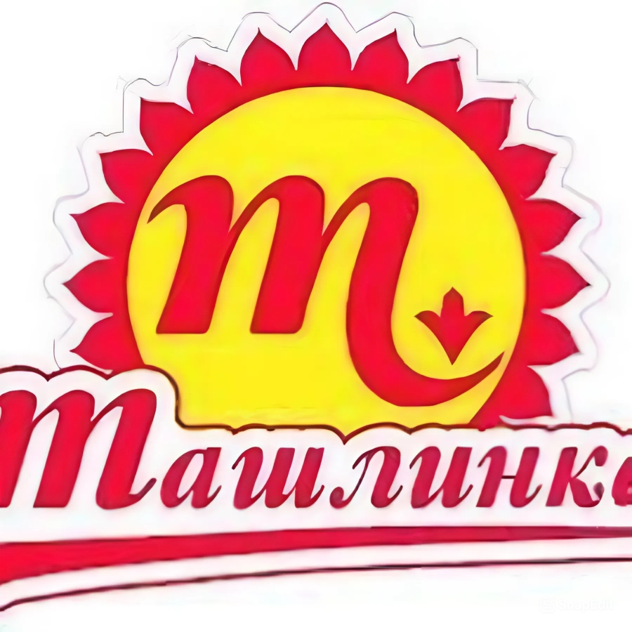

Ташлинская

Компания «Ташлинская» с 2003 г занимается выпуском хрена, аджики и горчицы. Годы работы не прошли даром – предприятие разработало и поставляет на рынок 20 видов оригинальных приправ. Соусы выпускаются по уникальным рецептам, чтобы потребитель оценил глубину вкуса и аромата пряностей. Продукты поставляются на рынок под двумя брендами – «Ташлинка» и «Острофский». ООО «Ташлинская» заинтересована в расширении дилерской сети, а потому, руководство открыто к диалогу с потенциальными партнерами. Уже во многих городах России соусы и специи компании можно увидеть на прилавках магазинов.